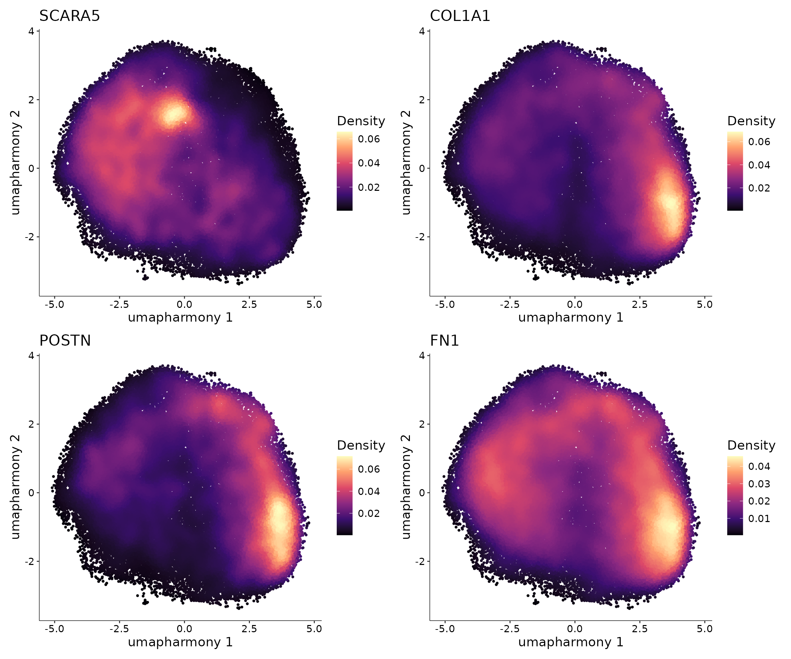
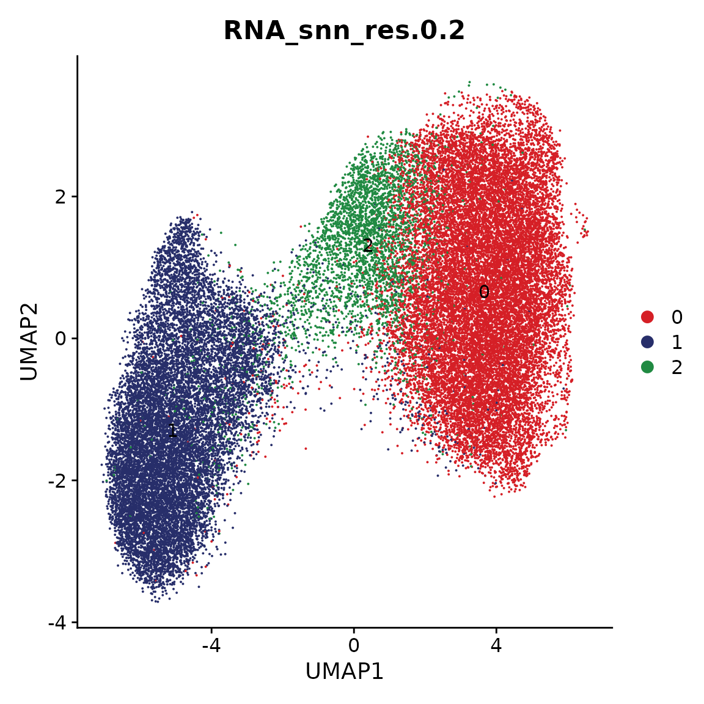
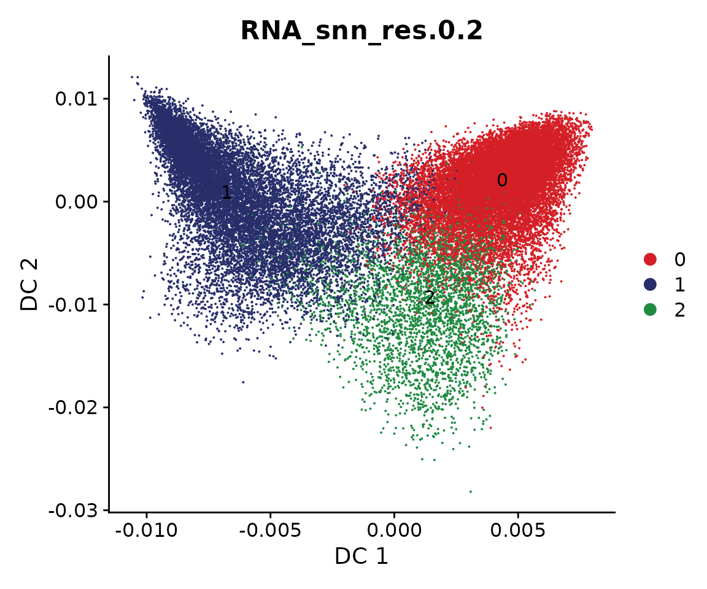
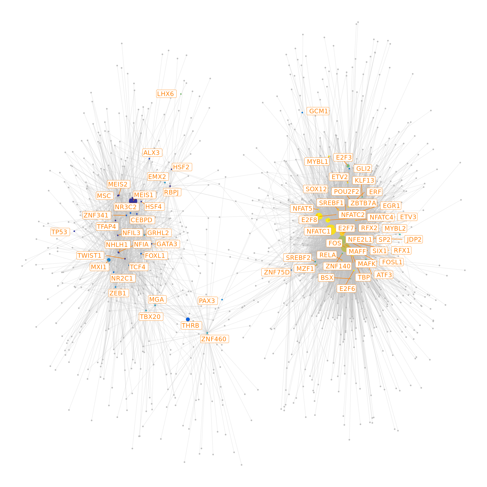
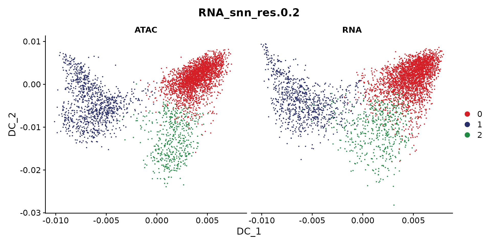

Gene-regulatory network of myofibroblast differentiation in myocardial infarction
Compiled: June 22, 2022
myofibroblast-GRN.RmdIn this tutorial, we will use the integrated snRNA-seq and snATAC-seq data to infer a gene regulatory network to characterize myofibroblast differentiation. More details about data integration can be found here
More specifically, we will:
- Identify the trajectory for myofibroblast differentiation
- Select the relevant TFs and genes for this process
- Infer and visualize the gene regulatory network
Next, we load all necessary packages:
suppressMessages(library(ArchR))
suppressMessages(library(Seurat))
suppressMessages(library(Signac))
suppressMessages(library(scMEGA))
suppressMessages(library(harmony))
suppressMessages(library(Nebulosa))
suppressMessages(library(BSgenome.Hsapiens.UCSC.hg38))
suppressMessages(library(JASPAR2020))
suppressMessages(library(TFBSTools))
suppressMessages(library(ggplot2))
suppressMessages(library(dplyr))
suppressMessages(library(igraph))
suppressMessages(library(ggraph))We first load the integrated data:
coembed.sub <- readRDS("./Fibroblast/coembed.sub.rds")Trajectory analysis
Dimensionality reduction
To infer trajectory, we will perform dimension reduction using diffusion map via the function RunDiffusionMap. This is based on the R package destiny.
coembed.sub <- RunDiffusionMap(coembed.sub, reduction = "harmony")## finding knns......done. Time: 228.98s
## Calculating transition probabilities......done. Time: 0.26s
##
## performing eigen decomposition......done. Time: 1.60s
cols <- ArchR::paletteDiscrete(coembed.sub@meta.data[, "RNA_snn_res.0.2"])
p <- DimPlot(coembed.sub, group.by = "RNA_snn_res.0.2", label = TRUE,
reduction = "dm", shuffle = TRUE, cols = cols) +
xlab("DC 1") + ylab("DC 2")
p
We can also plot snATAC-seq and snRNA-seq individually
DimPlot(coembed.sub, reduction = "dm",
group.by = "RNA_snn_res.0.2", split.by = "tech", cols = cols)
Cell pairing
Next, we match the cells between these two modalities. In other words, for each cell in, for example, snATAC-seq, we will find a cell from snRNA-seq data so that these two cells have the similar profiles. This is only necessary when each modality was performed independently. If snRNA-seq and snATAC-seq data was generated by multi-modal protocol, e.g., 10X multiome or SHARE-seq, this step can be skipped.
We here use the method proposed by Kartha, Vinay K., et al. to match the cells.
df.pair <- PairCells(object = coembed.sub, reduction = "harmony",
pair.by = "tech", ident1 = "ATAC", ident2 = "RNA")## Getting dimensional reduction data for pairing cells...## Pairing cells using geodesic mode...## Constructing KNN graph for computing geodesic distance ..## Computing graph-based geodesic distance ..## # KNN subgraphs detected: 1## Skipping subgraphs with either ATAC/RNA cells fewer than: 50## Pairing cells for subgraph No.1## Total ATAC cells in subgraph: 3397## Total RNA cells in subgraph: 22840## Subgraph size: 3397## Search threshold being used: 1359## Constructing KNN based on geodesic distance to reduce search pairing search space## Number of cells being paired: 3397 ATAC and 3397 RNA cells## Determing pairs through optimized bipartite matching ..## Assembling pair list ..## Finished!We can visualize the paired cells
sel_cells <- c(df.pair$ATAC, df.pair$RNA)
coembed.sub2 <- coembed.sub[, sel_cells]
options(repr.plot.height = 5, repr.plot.width = 10)
DimPlot(coembed.sub2, reduction = "dm",
group.by = "RNA_snn_res.0.2", split.by = "tech", cols = cols)
We next create a new Seurat object for there paired cells as if they are generated by single-cell multimodal protocol.
obj.pair <- CreatePairedObject(df.pair = df.pair,
object = coembed.sub2,
use.assay1 = "RNA",
use.assay2 = "ATAC")## Merging objects...
obj.pair## An object of class Seurat
## 202776 features across 3397 samples within 2 assays
## Active assay: RNA (28933 features, 0 variable features)
## 1 other assay present: ATAC
## 5 dimensional reductions calculated: pca, umap, harmony, umap_harmony, dmFinally, we infer a pseudo-time trajectory from SCARA5+ fibroblasts to myofibroblast using the approach from ArchR. Here we modified the function to allow to take a Seurat object as input
obj.pair <- AddTrajectory(object = obj.pair,
trajectory = c(2, 1),
group.by = "RNA_snn_res.0.2",
reduction = "dm",
dims = 1:3,
use.all = FALSE)
# we only plot the cells that are in this trajectory
obj <- obj.pair[, !is.na(obj.pair$Trajectory)]
p <- TrajectoryPlot(object = obj,
reduction = "dm",
continuousSet = "blueYellow",
size = 1,
addArrow = FALSE)
p
TF and gene selection
We next select candidate TFs and genes for building a meaningful gene regulatory network.
Select TFs
To identify potential regulator (i.e., TFs), we first estimate an acitivty score for each TF in each cell. This is done by first performing motif matching and then computing deviation scores using chromVAR.
# Get a list of motif position frequency matrices from the JASPAR database
pfm <- getMatrixSet(
x = JASPAR2020,
opts = list(collection = "CORE", tax_group = 'vertebrates', all_versions = FALSE)
)
# add motif information
obj <- AddMotifs(
object = obj,
genome = BSgenome.Hsapiens.UCSC.hg38,
pfm = pfm,
assay = "ATAC"
)## Building motif matrix## Finding motif positions## Creating Motif object
obj <- RunChromVAR(
object = obj,
genome = BSgenome.Hsapiens.UCSC.hg38,
assay = "ATAC"
)## Computing GC bias per region## Selecting background regions## Computing deviations from background## Constructing chromVAR assay
res <- SelectTFs(object = obj, return.heatmap = TRUE)## Find 456 shared features!
df.cor <- res$tfs
ht <- res$heatmapWe can visualize the TF activity dynamic along the trajectory
draw(ht)
Select genes
We will select relevant genes by first linking genes to peaks based on the corrleation between gene expression from the snRNA-seq data and peak accessibility from the snATAC-seq data along the inferred trajectory. This means that we only consider a gene to be a potential target if it can be assocaited to at least one peak.
res <- SelectGenes(object = obj,
labelTop1 = 0,
labelTop2 = 0)## Creating Trajectory Group Matrix..## Smoothing...## Creating Trajectory Group Matrix..## Smoothing...## Linking cis-regulatory elements to genes...
df.p2g <- res$p2g
ht <- res$heatmap
draw(ht)
Gene regulatory network inference
We here will try to predict a gene regulatory network based on the correlation of the TF binding activity as estimated from snATAC-seq and gene expression as measured by snRNA-seq along the trajectory.
tf.gene.cor <- GetTFGeneCorrelation(object = obj,
tf.use = df.cor$tfs,
gene.use = unique(df.p2g$gene),
tf.assay = "chromvar",
gene.assay = "RNA",
trajectory.name = "Trajectory")## Creating Trajectory Group Matrix..## Some values are below 0, this could be the Motif activity matrix in which scaleTo should be set = NULL.
## Continuing without depth normalization!## Smoothing...## Creating Trajectory Group Matrix..## Smoothing...We can then visualize this correlation matrix by heatmap. Also, we can cluster the genes and TFs to identify different regulatory modules for the predefined sub-populations.
ht <- GRNHeatmap(tf.gene.cor,
tf.timepoint = df.cor$time_point)## `use_raster` is automatically set to TRUE for a matrix with more than
## 2000 rows. You can control `use_raster` argument by explicitly setting
## TRUE/FALSE to it.
##
## Set `ht_opt$message = FALSE` to turn off this message.
ht
To associate genes to TFs, we will use the peak-to-gene links and TF binding sites information. Specifically, if a gene is regulated by a peak and this peak is bound by a TF, then we consider this gene to be a target of this TF.
motif.matching <- obj@assays$ATAC@motifs@data
colnames(motif.matching) <- obj@assays$ATAC@motifs@motif.names
motif.matching <-
motif.matching[unique(df.p2g$peak), unique(tf.gene.cor$tf)]
df.grn <- GetGRN(motif.matching = motif.matching,
df.cor = tf.gene.cor,
df.p2g = df.p2g)## Filtering network by peak-to-gene links...## Filtering network by TF binding site prediction...Next, we can visualize our network as the last step of this analysis
# define colors for nodes representing TFs (i.e., regulators)
df.cor <- df.cor[order(df.cor$time_point), ]
tfs.timepoint <- df.cor$time_point
names(tfs.timepoint) <- df.cor$tfs
# plot the graph, here we can highlight some genes
df.grn2 <- df.grn %>%
subset(correlation > 0.4) %>%
select(c(tf, gene, correlation)) %>%
rename(weights = correlation)
p <- GRNPlot(df.grn2,
tfs.timepoint = tfs.timepoint,
show.tf.labels = TRUE,
seed = 42,
plot.importance = FALSE,
min.importance = 2,
remove.isolated = FALSE)
options(repr.plot.height = 20, repr.plot.width = 20)
print(p)## Warning: Using alpha for a discrete variable is not advised.
GRN visualization
GRN in space
As an additional step, if the spatial transcriptome (ST) data (e.g., generated by using 10X Visium assay) are available, we can then visualize the target gene expression for some interesting TFs to understand the regulon activity in spatial space. First let’s download the ST data
mkdir -p VisiumSpatial
wget -P VisiumSpatial https://costalab.ukaachen.de/open_data/scMEGA/VisiumSpatial/AKK004_157772.rdsOf note, each spot in the 10X Visium assay contains multiple cells, meaning that we usually cannot identify cell types by clustering the data. To address this issue, people developed various computation tools to estimate cell-type-specific abundance in each spot. Here we have perform such analysis using cell2location based on our snRNA-seq data. Let’s first visualize the fibroblast proportion.
obj.spatial <- readRDS("./VisiumSpatial/AKK004_157772.rds")
DefaultAssay(obj.spatial) <- "c2l_props"
p <- SpatialFeaturePlot(obj.spatial, features = "Fib", min.cutoff = "q5",
max.cutoff = "q95") +
scale_fill_viridis(option = "D") +
ggtitle("") +
labs(fill = "") +
theme(legend.position = "bottom")## Scale for 'fill' is already present. Adding another scale for 'fill', which
## will replace the existing scale.
print(p)
We next can check the gene expression in space. Here, we use the above TFs.
DefaultAssay(obj.spatial) <- "SCT"
p1 <- SpatialFeaturePlot(object = obj.spatial, features = "NR3C2") +
ggtitle("") +
theme(legend.position = "bottom") +
scale_fill_viridis(option = "C")## Scale for 'fill' is already present. Adding another scale for 'fill', which
## will replace the existing scale.
p2 <- SpatialFeaturePlot(object = obj.spatial, features = "RUNX1") +
ggtitle("") +
theme(legend.position = "bottom") +
scale_fill_viridis(option = "C")## Scale for 'fill' is already present. Adding another scale for 'fill', which
## will replace the existing scale.
p1 + p2
Then, we visualize the regulon activity of NR3C2 and RUNX1 by using the GRN that we predicted. The major idea is that if the target genes of a TF are up-regulated, then this TF should have high activity. This principle has been used to develop computation methods to estimate TF activity from gene expression data, such as DoRothEA.
DefaultAssay(obj.spatial) <- "SCT"
p1 <- GRNSpatialPlot(object = obj.spatial, assay = "SCT", df.grn = df.grn2,
tf.use = "NR3C2", vis.option = "B") +
ggtitle("") +
theme(legend.position = "bottom") ## Warning: The following features are not present in the object: CATSPERB, GALR1,
## LMX1A, TEX26-AS1, UGDH-AS1, ZBTB20-AS5, not searching for symbol synonyms## Scale for 'fill' is already present. Adding another scale for 'fill', which
## will replace the existing scale.
p2 <- GRNSpatialPlot(object = obj.spatial, assay = "SCT", df.grn = df.grn2,
tf.use = "RUNX1", vis.option = "B") +
ggtitle("") +
theme(legend.position = "bottom")## Warning: The following features are not present in the object: CNTNAP2, DEC1,
## HMGA2, MIR181A1HG, RFX8, TPRG1, VEPH1, not searching for symbol synonyms## Scale for 'fill' is already present. Adding another scale for 'fill', which
## will replace the existing scale.
p1 + p2
The above plots demonstrate a clear spatial-distributed pattern for the regulon activity of NR3C2 and RUNX1.
Save data
saveRDS(obj, "./Fibroblast/coembed.trajectory.rds")
# Check session information
sessionInfo()## R version 4.1.1 (2021-08-10)
## Platform: x86_64-conda-linux-gnu (64-bit)
## Running under: Rocky Linux 8.5 (Green Obsidian)
##
## Matrix products: default
## BLAS/LAPACK: /home/rs619065/miniconda3/envs/r-4.1/lib/libopenblasp-r0.3.18.so
##
## locale:
## [1] LC_CTYPE=en_US.UTF-8 LC_NUMERIC=C
## [3] LC_TIME=en_US.UTF-8 LC_COLLATE=en_US.UTF-8
## [5] LC_MONETARY=en_US.UTF-8 LC_MESSAGES=en_US.UTF-8
## [7] LC_PAPER=en_US.UTF-8 LC_NAME=C
## [9] LC_ADDRESS=C LC_TELEPHONE=C
## [11] LC_MEASUREMENT=en_US.UTF-8 LC_IDENTIFICATION=C
##
## attached base packages:
## [1] grid stats4 stats graphics grDevices utils datasets
## [8] methods base
##
## other attached packages:
## [1] circlize_0.4.15 ComplexHeatmap_2.10.0
## [3] ggraph_2.0.5 igraph_1.3.2
## [5] dplyr_1.0.9 TFBSTools_1.32.0
## [7] JASPAR2020_0.99.10 BSgenome.Hsapiens.UCSC.hg38_1.4.4
## [9] BSgenome_1.62.0 rtracklayer_1.54.0
## [11] Biostrings_2.62.0 XVector_0.34.0
## [13] Nebulosa_1.4.0 patchwork_1.1.1
## [15] harmony_0.1.0 Rcpp_1.0.8.3
## [17] scMEGA_0.1.0 Signac_1.6.0
## [19] sp_1.5-0 SeuratObject_4.1.0
## [21] Seurat_4.1.1 ArchR_1.0.1
## [23] magrittr_2.0.3 rhdf5_2.38.1
## [25] Matrix_1.4-1 data.table_1.14.2
## [27] SummarizedExperiment_1.24.0 Biobase_2.54.0
## [29] GenomicRanges_1.46.1 GenomeInfoDb_1.30.1
## [31] IRanges_2.28.0 S4Vectors_0.32.4
## [33] BiocGenerics_0.40.0 MatrixGenerics_1.6.0
## [35] matrixStats_0.62.0 ggplot2_3.3.6
##
## loaded via a namespace (and not attached):
## [1] vcd_1.4-9 ica_1.0-2
## [3] RcppRoll_0.3.0 class_7.3-20
## [5] Rsamtools_2.10.0 foreach_1.5.2
## [7] lmtest_0.9-40 rprojroot_2.0.3
## [9] crayon_1.5.1 laeken_0.5.2
## [11] spatstat.core_2.4-4 MASS_7.3-57
## [13] rhdf5filters_1.6.0 nlme_3.1-157
## [15] qlcMatrix_0.9.7 rlang_1.0.2
## [17] ROCR_1.0-11 irlba_2.3.5
## [19] smoother_1.1 BiocParallel_1.28.3
## [21] rjson_0.2.21 CNEr_1.30.0
## [23] bit64_4.0.5 glue_1.6.2
## [25] poweRlaw_0.70.6 sctransform_0.3.3
## [27] parallel_4.1.1 chromVAR_1.16.0
## [29] spatstat.sparse_2.1-1 AnnotationDbi_1.56.2
## [31] spatstat.geom_2.4-0 tidyselect_1.1.2
## [33] textshape_1.7.3 fitdistrplus_1.1-8
## [35] XML_3.99-0.9 tidyr_1.2.0
## [37] zoo_1.8-10 GenomicAlignments_1.30.0
## [39] xtable_1.8-4 RcppHNSW_0.3.0
## [41] evaluate_0.15 cli_3.3.0
## [43] zlibbioc_1.40.0 miniUI_0.1.1.1
## [45] bslib_0.3.1 rpart_4.1.16
## [47] fastmatch_1.1-3 RcppEigen_0.3.3.9.2
## [49] shiny_1.7.1 xfun_0.31
## [51] clue_0.3-60 cluster_2.1.3
## [53] caTools_1.18.2 tidygraph_1.2.1
## [55] pcaMethods_1.86.0 KEGGREST_1.34.0
## [57] tibble_3.1.7 ggrepel_0.9.1
## [59] listenv_0.8.0 TFMPvalue_0.0.8
## [61] png_0.1-7 future_1.26.1
## [63] withr_2.5.0 lsa_0.73.3
## [65] bitops_1.0-7 slam_0.1-50
## [67] ggforce_0.3.3 ranger_0.13.1
## [69] plyr_1.8.7 sparsesvd_0.2
## [71] e1071_1.7-9 pracma_2.3.8
## [73] pillar_1.7.0 GlobalOptions_0.1.2
## [75] cachem_1.0.6 fs_1.5.2
## [77] scatterplot3d_0.3-41 TTR_0.24.3
## [79] GetoptLong_1.0.5 xts_0.12.1
## [81] vctrs_0.4.1 ellipsis_0.3.2
## [83] generics_0.1.2 tools_4.1.1
## [85] munsell_0.5.0 tweenr_1.0.2
## [87] proxy_0.4-26 DelayedArray_0.20.0
## [89] fastmap_1.1.0 compiler_4.1.1
## [91] abind_1.4-5 httpuv_1.6.5
## [93] plotly_4.10.0 rgeos_0.5-9
## [95] GenomeInfoDbData_1.2.7 gridExtra_2.3
## [97] lattice_0.20-45 deldir_1.0-6
## [99] utf8_1.2.2 later_1.3.0
## [101] jsonlite_1.8.0 ggplot.multistats_1.0.0
## [103] scales_1.2.0 docopt_0.7.1
## [105] pbapply_1.5-0 carData_3.0-5
## [107] lazyeval_0.2.2 nabor_0.5.0
## [109] promises_1.2.0.1 car_3.1-0
## [111] doParallel_1.0.17 R.utils_2.11.0
## [113] goftest_1.2-3 spatstat.utils_2.3-1
## [115] reticulate_1.25 rmarkdown_2.14
## [117] pkgdown_2.0.3 rlemon_0.2.0
## [119] cowplot_1.1.1 textshaping_0.3.6
## [121] Rtsne_0.16 uwot_0.1.11
## [123] survival_3.3-1 yaml_2.3.5
## [125] systemfonts_1.0.4 htmltools_0.5.2
## [127] memoise_2.0.1 BiocIO_1.4.0
## [129] graphlayouts_0.8.0 destiny_3.9.1
## [131] viridisLite_0.4.0 digest_0.6.29
## [133] assertthat_0.2.1 mime_0.12
## [135] RSQLite_2.2.14 future.apply_1.9.0
## [137] blob_1.2.3 R.oo_1.24.0
## [139] ragg_1.2.2 splines_4.1.1
## [141] labeling_0.4.2 Rhdf5lib_1.16.0
## [143] RCurl_1.98-1.6 ks_1.13.5
## [145] hms_1.1.1 colorspace_2.0-3
## [147] shape_1.4.6 nnet_7.3-17
## [149] sass_0.4.1 mclust_5.4.10
## [151] RANN_2.6.1 mvtnorm_1.1-3
## [153] ggseqlogo_0.1 fansi_1.0.3
## [155] tzdb_0.3.0 VIM_6.1.1
## [157] parallelly_1.32.0 SnowballC_0.7.0
## [159] R6_2.5.1 ggridges_0.5.3
## [161] lifecycle_1.0.1 curl_4.3.2
## [163] leiden_0.4.2 motifmatchr_1.16.0
## [165] jquerylib_0.1.4 robustbase_0.95-0
## [167] desc_1.4.1 RcppAnnoy_0.0.19
## [169] RColorBrewer_1.1-3 iterators_1.0.14
## [171] stringr_1.4.0 htmlwidgets_1.5.4
## [173] polyclip_1.10-0 purrr_0.3.4
## [175] seqLogo_1.60.0 mgcv_1.8-40
## [177] globals_0.15.0 spatstat.random_2.2-0
## [179] progressr_0.10.1 codetools_0.2-18
## [181] GO.db_3.14.0 gtools_3.9.2.2
## [183] SingleCellExperiment_1.16.0 RSpectra_0.16-1
## [185] R.methodsS3_1.8.1 gtable_0.3.0
## [187] DBI_1.1.2 tensor_1.5
## [189] httr_1.4.3 highr_0.9
## [191] KernSmooth_2.23-20 stringi_1.7.6
## [193] reshape2_1.4.4 farver_2.1.0
## [195] annotate_1.72.0 viridis_0.6.2
## [197] ggthemes_4.2.4 hexbin_1.28.2
## [199] optmatch_0.10.3 magick_2.7.3
## [201] DT_0.23 boot_1.3-28
## [203] restfulr_0.0.13 readr_2.1.2
## [205] scattermore_0.8 DEoptimR_1.0-11
## [207] bit_4.0.4 spatstat.data_2.2-0
## [209] pkgconfig_2.0.3 DirichletMultinomial_1.36.0
## [211] knn.covertree_1.0 knitr_1.39